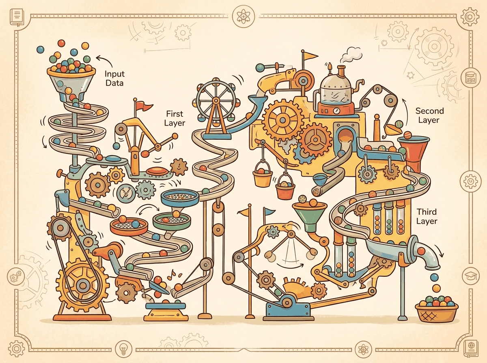
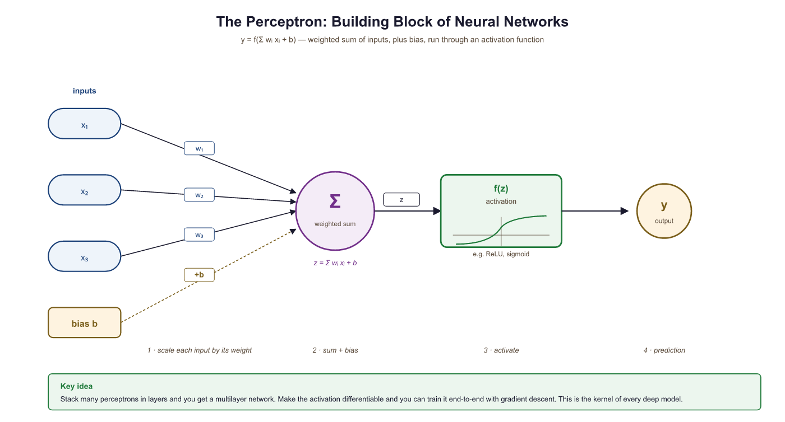
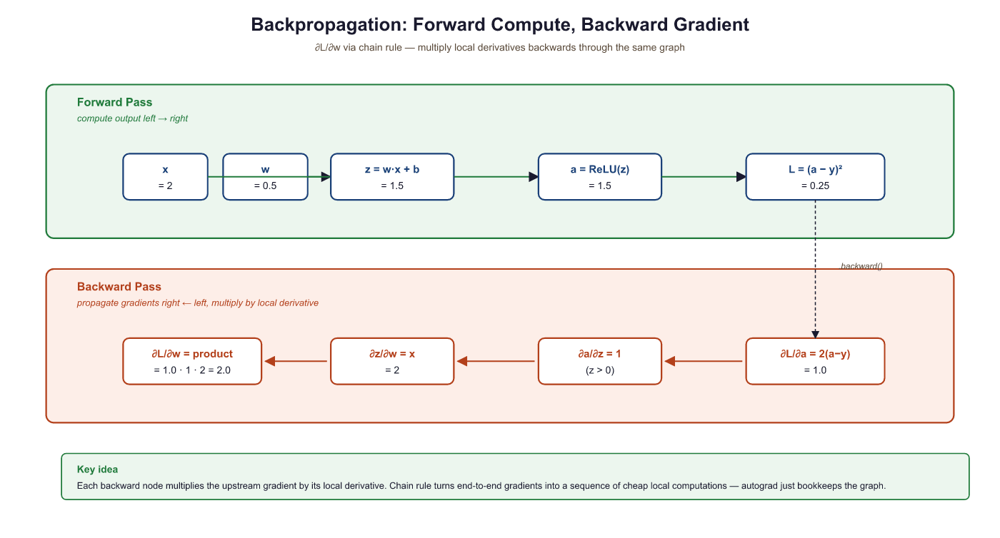

They told me backpropagation would help me learn from my mistakes. Now I just make them faster, in parallel, on eight GPUs.
Tensor, Backprop-Bruised AI Agent
In Section 0.1, you learned how a model can learn from data using gradient descent and loss functions. Those ideas were powerful, but they were limited to finding simple patterns (linear boundaries, shallow decision trees). Deep learning changed everything by stacking layers of simple functions to learn extraordinarily complex representations. This single idea, composing simple transformations into deep hierarchies, is what lets a neural network translate languages, generate images, and power the conversational AI systems you will build in this book.
Prerequisites
This section builds directly on the ML fundamentals covered in Section 0.1: ML Basics, particularly cross-entropy, loss functions, and the bias-variance tradeoff. Familiarity with matrix multiplication and basic calculus (derivatives, chain rule) will help, though we build intuition before formalism throughout.
0.2.1 Neural Network Fundamentals

0.2.1.1 The Perceptron: Your First Artificial Neuron
In 1958, Frank Rosenblatt built a machine called the Mark I Perceptron that could learn to distinguish shapes. The New York Times declared it the embryo of a computer that would "be able to walk, talk, see, write, reproduce itself and be conscious of its existence." The reality was far humbler: a perceptron is the simplest possible neural network, a single unit that takes multiple inputs, multiplies each by a learnable weight, adds a bias term, and passes the result through an activation function to produce an output. Think of it as a tiny decision-maker that draws a single straight line through your data.
What it is: A linear classifier that computes $y = f(w_{1}x_{1} + w_{2}x_{2} + ... + w_{n}x_{n} + b)$, where $f$ is an activation function.
Why it matters: The perceptron is the conceptual atom of every neural network. Understanding it thoroughly makes the rest of deep learning far more intuitive.

0.2.1.2 Multi-Layer Perceptrons: Stacking LEGO Bricks
A single perceptron can only learn linear boundaries. To capture complex patterns, we stack layers of perceptrons together, forming a Multi-Layer Perceptron (MLP). Think of it exactly like building with LEGO bricks. A single brick is not very interesting. But when you snap bricks together in layers, you can build anything: a house, a castle, a spaceship. Each layer in a neural network transforms its input in a simple way, but the composition of many layers can represent remarkably complex functions.
An MLP has three types of layers:
- Input layer: Receives the raw features (no computation happens here).
- Hidden layers: The intermediate LEGO layers. Each neuron computes a weighted sum followed by an activation. This is where the network learns its internal representations.
- Output layer: Produces the final prediction (a class probability, a regression value, etc.).
The Universal Approximation Theorem tells us that an MLP with just one hidden layer and enough neurons can approximate any continuous function to arbitrary accuracy. In practice, though, deeper networks (more layers with fewer neurons each) tend to learn more efficiently than extremely wide, shallow ones. Depth lets the network build hierarchical features: edges compose into textures, textures into parts, parts into objects.
0.2.1.3 Activation Functions
What they are: Non-linear functions applied after the weighted sum in each neuron. Without them, stacking layers would be pointless, because a composition of linear functions is just another linear function.
Why they matter: Activation functions are what give neural networks the ability to model non-linear relationships. They are the key ingredient that separates a deep network from a simple linear regression.
| Function | Formula | Range | When to Use |
|---|---|---|---|
| ReLU | max(0, z) | [0, ∞) | Default choice for hidden layers. Fast, simple, works well in most cases. |
| Sigmoid | 1 / (1 + $e^{-z}$) | (0, 1) | Binary classification output. Squashes values to probabilities. |
| Tanh | ($e^{z}$ - $e^{-z}$) / ($e^{z}$ + $e^{-z}$) | (-1, 1) | When you need zero-centered outputs. Common in RNNs. |
| GELU | z · Φ(z) | (≈-0.17, ∞) | Used in Transformers (Section 7.1, GPT). Smooth approximation of ReLU. |
| Softmax | ezi / Σezj | (0, 1), sums to 1 | Multi-class classification output layer. |
If a neuron's weights cause its input to always be negative, ReLU outputs zero for every sample, and the gradient is also zero, so the neuron never updates again. It is "dead." Variants like Leaky ReLU (which outputs a small negative slope instead of zero) and GELU address this issue.
Example 1: Building and running an MLP in NumPy
# ReLU and softmax from scratch: ReLU zeros out negatives,
# softmax converts raw logits into a valid probability distribution.
import numpy as np
def relu(z):
return np.maximum(0, z)
def softmax(z):
exp_z = np.exp(z - np.max(z)) # subtract max for numerical stability
return exp_z / exp_z.sum()
# A tiny 2-layer MLP: 3 inputs, 4 hidden, 2 outputs
np.random.seed(42)
W1 = np.random.randn(3, 4) * 0.5 # (3, 4) weight matrix
b1 = np.zeros(4)
W2 = np.random.randn(4, 2) * 0.5 # (4, 2) weight matrix
b2 = np.zeros(2)
# Forward pass with a sample input
x = np.array([1.0, 2.0, 3.0])
hidden = relu(x @ W1 + b1) # hidden layer
output = softmax(hidden @ W2 + b2) # output probabilities
print("Hidden activations:", hidden.round(3))
print("Output probabilities:", output.round(3))
print("Predicted class:", np.argmax(output))0.2.2 Backpropagation and the Chain Rule
What it is: Backpropagation (backprop) is the algorithm that computes how much each weight in the network contributed to the overall error. It works by applying the chain rule of calculus in reverse, propagating the error signal from the output layer back through every hidden layer.
Why it matters: Without backprop, we would have no efficient way to train deep networks. It is the engine that makes gradient descent possible for networks with millions (or billions) of parameters. PyTorch's autograd system, which we cover hands-on in Section 0.3, automates backpropagation so you rarely need to compute derivatives by hand.
How it works: Consider a simple network where an input $x$ flows through two functions. The forward pass computes $h = f(x)$ and then $y = g(h)$. To find how the loss $L$ changes with respect to the input parameter, the chain rule tells us:
Backprop computes these derivatives from right to left (output to input), reusing intermediate results at each layer.
Backpropagation was independently discovered at least four times before it became famous in 1986. The algorithm spent nearly two decades in obscurity, making it perhaps the most underappreciated mathematical insight until deep learning finally gave it a reason to shine.
If you ever need to explain backpropagation at a dinner party, here it is: the network guesses, checks how wrong it was, then traces the blame backwards through every layer so each weight knows how to adjust. That is it. Everything else is calculus bookkeeping.
The intuitive description of backpropagation as "sending errors backward through the network" is a useful mental model but can be misleading. Backpropagation does not literally send anything backward. It is simply the chain rule of calculus applied systematically to a computational graph. The algorithm computes gradients (partial derivatives of the loss with respect to each parameter) by multiplying local derivatives along each path from the loss to the parameter. No "error signal" physically travels through the network. The forward pass computes outputs; the backward pass computes derivatives. These are two separate mathematical operations. Understanding this distinction matters when you encounter techniques like gradient checkpointing or when debugging gradient flow issues, because the gradients are just numbers computed from a formula, not signals propagating through a physical system.
0.2.2.1 A Concrete Numerical Example
Let us walk through backpropagation with actual numbers. Consider a single neuron with one input, one weight, a bias, and a ReLU activation. The target is $y_{true} = 1.0$, and we use mean squared error loss.

Let us trace through this step by step:
- Forward pass: $z = w \cdot x + b = 0.5 \cdot 2 + 0.5 = 1.5$. After ReLU: $a = \max(0, 1.5) = 1.5$. Loss: $L = (1.5 - 1.0)^{2} = 0.25$.
- Backward pass (chain rule):
- $dL/da = 2(a - y_{true}) = 2(1.5 - 1.0) = 1.0$
- $da/dz = 1$ (ReLU derivative is 1 when z > 0)
- $dz/dw = x = 2.0$
- By the chain rule: $dL/dw = 1.0 \times 1 \times 2.0 = \textbf{2.0}$
- Weight update (with learning rate 0.1): $w_{new} = 0.5 - 0.1 \times 2.0 = \textbf{0.3}$
The weight decreased, which will push the output closer to 1.0 on the next forward pass. This is exactly what gradient descent does: it nudges every parameter in the direction that reduces the loss.
Who: Junior ML engineer at a healthcare startup building a diagnostic text classifier
Situation: Training a 12-layer fully connected network to classify radiology reports into 15 diagnosis categories using sigmoid activations throughout.
Problem: After 50 epochs, the model's accuracy was stuck at 6.7% (random chance for 15 classes). The loss barely decreased after the first epoch.
Dilemma: The team considered three options: reducing the network to 3 layers (losing representational capacity), switching to a pretrained transformer (expensive, 4 weeks of integration work), or investigating the gradient flow (quick, but required understanding backpropagation deeply).
Decision: They added gradient magnitude logging per layer and discovered that gradients in layers 1 through 8 were effectively zero (below 1e-10), a textbook vanishing gradient problem caused by sigmoid activations saturating.
How: Replaced all hidden-layer activations with ReLU, switched from random initialization to Kaiming initialization, and added BatchNorm after each linear layer. Total code changes: 9 lines.
Result: Accuracy reached 78.3% within 20 epochs. Gradient magnitudes in the earliest layers stayed above 1e-4 throughout training. The entire fix took 2 hours instead of the 4 weeks estimated for the transformer approach.
Lesson: When training stalls, check your gradient flow before changing your architecture. Activation functions, initialization, and normalization are the first levers to pull.
In a real network with millions of parameters, this same process happens simultaneously for every weight. Modern frameworks like PyTorch compute all these gradients automatically using a technique called automatic differentiation, which builds a computational graph during the forward pass and traverses it in reverse during the backward pass.
0.2.3 Regularization Techniques
In Section 0.1, you learned that overfitting occurs when a model memorizes training data instead of learning general patterns. Deep networks, with their enormous capacity, are especially prone to this. Here are the three most important tools for fighting overfitting in deep learning.
0.2.3.1 Dropout
What it is: During each training step, dropout randomly "turns off" a fraction of neurons (typically 20% to 50%) by setting their outputs to zero.
Why it matters: It prevents co-adaptation, where neurons become overly dependent on specific other neurons. By randomly removing neurons during training, the network is forced to learn redundant, robust representations.
When to use it: Almost always in fully connected layers. Common dropout rates are 0.1 to 0.5. Use lower rates (0.1) for smaller networks and higher rates (0.3 to 0.5) for larger ones. At test time, dropout is turned off and activations are scaled accordingly.
0.2.3.2 Batch Normalization
What it is: Batch normalization (BatchNorm) normalizes the outputs of a layer across the current mini-batch to have zero mean and unit variance. It then applies two learnable parameters (scale and shift) so the network can undo the normalization if that is optimal.
Why it matters: It dramatically stabilizes and accelerates training. Without it, as weights in early layers change, the distribution of inputs to later layers shifts constantly (a problem called internal covariate shift). BatchNorm keeps these distributions stable.
When to use it: In most deep networks, especially CNNs. Place it after the linear/convolutional layer and before the activation function. For very small batch sizes, consider Softmax instead (which normalizes across features rather than across the batch). Layer Normalization is the standard choice in Transformer architectures (Section 3.3).
Who: Data scientist at an insurance company building a claims fraud detector
Situation: Training a 4-layer neural network on 8,000 labeled fraud claims (3% positive rate). The model needed to run on CPU in a batch scoring pipeline.
Problem: Training accuracy hit 99.1%, but validation F1 on the fraud class was only 0.22, indicating severe overfitting on the majority class.
Dilemma: Adding dropout (0.5) alone improved validation F1 to 0.38 but destabilized training loss. Adding BatchNorm alone improved training speed but did not close the overfitting gap (validation F1: 0.29). Using both together risked interactions that could make tuning harder.
Decision: They used BatchNorm in the first two layers for stable training, followed by dropout (0.3) in the last two layers for regularization. They also applied class-weighted cross-entropy loss to address the imbalance.
How: Architecture became Linear(64) > BatchNorm > ReLU > Linear(32) > BatchNorm > ReLU > Dropout(0.3) > Linear(16) > ReLU > Dropout(0.3) > Linear(2). Class weight for fraud was set to 32 (inverse of 3% frequency).
Result: Validation F1 on fraud reached 0.61, a 177% improvement over the baseline. Training converged in 35 epochs (down from 80 without BatchNorm). The combined approach outperformed either technique used alone.
Lesson: BatchNorm and dropout are complementary, not competing. Use BatchNorm early in the network for stability and dropout later for regularization, especially on small datasets with class imbalance.
0.2.3.3 Weight Initialization
What it is: The strategy used to set the initial values of weights before training begins.
Why it matters: Poor initialization can cause gradients to either vanish (shrink to near zero) or explode (grow uncontrollably) as they propagate through layers. Both scenarios make training extremely slow or impossible.
| Method | Best With | How It Works |
|---|---|---|
| Xavier/Glorot | Sigmoid, Tanh | Scales weights by 1/√($n_{in}$), keeping variance stable across layers. |
| Kaiming/He | ReLU and variants | Scales weights by √(2/$n_{in}$), accounting for ReLU zeroing out half the values. |
Batch normalization, dropout, and proper weight initialization are not optional extras. They are essential infrastructure for training deep networks reliably. Skipping any one of them often leads to unstable training, poor generalization, or both. Modern architectures like Transformers replace BatchNorm with LayerNorm, but the principle of normalizing intermediate representations remains universal.
Example 2: Dropout and BatchNorm in a PyTorch model
# RobustMLP: a production-style feedforward network with BatchNorm,
# Dropout, and He initialization to prevent vanishing gradients.
import torch
import torch.nn as nn
class RobustMLP(nn.Module):
def __init__(self, input_dim, hidden_dim, output_dim, dropout_rate=0.3):
super().__init__()
self.net = nn.Sequential(
nn.Linear(input_dim, hidden_dim),
nn.BatchNorm1d(hidden_dim), # normalize before activation
nn.ReLU(),
nn.Dropout(dropout_rate), # randomly zero 30% of neurons
nn.Linear(hidden_dim, hidden_dim),
nn.BatchNorm1d(hidden_dim),
nn.ReLU(),
nn.Dropout(dropout_rate),
nn.Linear(hidden_dim, output_dim),
)
# Kaiming initialization for ReLU layers
for m in self.modules():
if isinstance(m, nn.Linear):
nn.init.kaiming_normal_(m.weight, nonlinearity='relu')
# Forward pass: define computation graph
def forward(self, x):
return self.net(x)
model = RobustMLP(input_dim=10, hidden_dim=64, output_dim=3)
print(model)
print(f"Total parameters: {sum(p.numel() for p in model.parameters()):,}")0.2.4 Convolutional Neural Networks (CNNs) Overview
What they are: CNNs are specialized neural networks designed for data with spatial structure (images, audio spectrograms, time series). Instead of connecting every neuron to every input, a CNN uses small learnable filters (also called kernels) that slide across the input, detecting local patterns.
Why they matter: Before CNNs, computer vision required hand-crafted feature engineering. CNNs learn the features directly from raw pixels. The same idea of local pattern detection underpins many modern architectures, including those used in speech recognition for conversational AI.
How they work: A CNN typically alternates between two types of layers:
- Convolutional layers: Apply small filters (e.g., 3×3) across the spatial dimensions. Each filter learns to detect a specific pattern (edges, corners, textures). The output is called a feature map.
- Pooling layers: Reduce the spatial dimensions by taking the maximum or average over small regions (e.g., 2×2). This makes the representation more compact and translation-invariant.
After several convolutional and pooling layers, the output is flattened and passed through fully connected layers for the final prediction.
While this book focuses on language models and conversational AI (which primarily use Transformers, covered in Chapter 3), understanding CNNs remains valuable. Many multimodal AI systems combine vision encoders (CNNs or Vision Transformers) with language models, as explored in Chapter 20: Multimodal Models.
0.2.5 Training Best Practices
Knowing the architecture is only half the battle. How you train a deep network matters just as much as the network's structure. Here are the essential techniques that separate productive training runs from frustrating ones.
0.2.5.1 Learning Rate Scheduling
What it is: A strategy for adjusting the learning rate during training rather than keeping it fixed.
Why it matters: A learning rate that is too high causes the loss to oscillate or diverge. One that is too low wastes compute time. The optimal learning rate often changes as training progresses: you want to take large steps initially (to make fast progress) and smaller steps later (to fine-tune).
Common schedules:
- Step decay: Multiply the learning rate by a factor (e.g., 0.1) every N epochs.
- Cosine annealing: Smoothly decrease the learning rate following a cosine curve. Very popular in practice.
- Warmup + decay: Start with a tiny learning rate, ramp up linearly over the first few hundred steps, then decay. This is standard for Transformer training and critical for the LLM work you will do later.
- ReduceLROnPlateau: Monitor the validation loss and reduce the learning rate when improvement stalls.
0.2.5.2 Early Stopping
What it is: Monitoring the validation loss during training and stopping when it has not improved for a specified number of epochs (the "patience").
Why it matters: It is the simplest and most effective defense against overfitting. Training too long almost always leads to overfitting, so stopping at the right moment saves both time and model quality.
When to use it: Almost always. Set patience to 5 to 10 epochs and save the best model checkpoint based on validation performance.
0.2.5.3 Gradient Clipping
What it is: Capping the magnitude of gradients during backpropagation, either by value or by norm.
Why it matters: In deep or recurrent networks, gradients can sometimes "explode" (grow to enormous values), causing wildly unstable weight updates. Gradient clipping puts a ceiling on how large any single update can be.
When to use it: Always for RNNs and Transformers. A common setting is to clip the global gradient norm to 1.0.
Example 3: Complete training loop with scheduling, early stopping, and gradient clipping
# Complete training loop with cosine LR scheduling, gradient clipping,
# and early stopping that halts when validation loss stops improving.
import torch
import torch.nn as nn
import torch.optim as optim
# Setup: model, optimizer, scheduler
model = nn.Sequential(nn.Linear(10, 64), nn.ReLU(), nn.Linear(64, 1))
optimizer = optim.Adam(model.parameters(), lr=1e-3)
scheduler = optim.lr_scheduler.CosineAnnealingLR(optimizer, T_max=50)
criterion = nn.MSELoss()
# Simulated data
torch.manual_seed(42)
X_train = torch.randn(200, 10)
y_train = torch.randn(200, 1)
X_val = torch.randn(50, 10)
y_val = torch.randn(50, 1)
# Early stopping setup
best_val_loss = float('inf')
patience, patience_counter = 5, 0
for epoch in range(50):
# Training step
model.train()
optimizer.zero_grad()
loss = criterion(model(X_train), y_train)
loss.backward()
# Gradient clipping: cap the norm at 1.0
torch.nn.utils.clip_grad_norm_(model.parameters(), max_norm=1.0)
optimizer.step()
scheduler.step()
# Validation step
model.eval()
with torch.no_grad():
val_loss = criterion(model(X_val), y_val).item()
# Early stopping check
if val_loss < best_val_loss:
best_val_loss = val_loss
patience_counter = 0
torch.save(model.state_dict(), 'best_model.pt') # save best
else:
patience_counter += 1
if patience_counter >= patience:
print(f"Early stopping at epoch {epoch}")
break
if epoch % 10 == 0:
lr = optimizer.param_groups[0]['lr']
print(f"Epoch {epoch:3d} | Train Loss: {loss.item():.4f} | Val Loss: {val_loss:.4f} | LR: {lr:.6f}")
print(f"Best validation loss: {best_val_loss:.4f}")Think of these three techniques as complementary safety nets. Gradient clipping prevents catastrophic updates on any single step. Learning rate scheduling ensures the optimization trajectory stays smooth over the full training run. Early stopping catches overfitting at the macro level by watching validation performance. Together, they make deep learning training far more reliable.
0.2.5.4 The Optimizer Ladder: From SGD to AdamW
Plain stochastic gradient descent (SGD) is the conceptual atom of training, but the optimizers used to actually train modern LLMs evolved through six distinct generations, each fixing a specific weakness of its predecessor. Reading the ladder in order is the fastest way to develop an intuition for why AdamW is the de-facto default for transformer training in 2026.
| Optimizer | Update rule (simplified) | Problem it fixes |
|---|---|---|
| SGD (1951) | $w \leftarrow w - \eta \, g_t$ | The baseline. Noisy gradients, slow in ravines. |
| Momentum (Polyak, 1964) | $v_t = \beta v_{t-1} + g_t; \; w \leftarrow w - \eta v_t$ | Damps oscillation across narrow valleys; accelerates along consistent directions. |
| Nesterov (NAG) (1983) | Momentum evaluated at the look-ahead point $w - \eta \beta v_{t-1}$ | Reduces overshoot at sharp curvature. |
| Adagrad (Duchi et al., 2011) | $w \leftarrow w - \eta \, g_t / \sqrt{\sum_\tau g_\tau^2 + \epsilon}$ | Per-parameter step sizes: rare features get bigger steps, common features smaller ones. |
| RMSprop (Hinton, 2012) | Adagrad with an exponential moving average of squared gradients | Stops the Adagrad denominator from growing without bound; lets late-stage training keep moving. |
| Adam (Kingma & Ba, 2014) | Momentum (1st moment) + RMSprop (2nd moment) + bias correction | Combines both ideas in one optimizer; well-behaved out of the box. |
| AdamW (Loshchilov & Hutter, 2017) | Adam with decoupled weight decay applied directly to $w$, not folded into the gradient | Fixes the broken interaction between L2 regularization and adaptive learning rates that hurt Adam on transformers. |
Why AdamW won. The original Adam implements L2 regularization by adding $\lambda w$ to the gradient before it enters the adaptive moment estimates. That coupling means the effective weight-decay rate gets divided by the running RMS of past gradients, so parameters with historically large gradients are barely regularized while parameters with small gradients are over-regularized. AdamW decouples weight decay by applying $w \leftarrow w - \eta \lambda w$ as a separate step that does not pass through the adaptive scaling. The fix is one line of code, but it consistently improves generalization for transformers and is the reason essentially every modern LLM (BERT, GPT-2 onward, LLaMA, Mistral, Qwen, Gemma) trains with AdamW rather than Adam. The full LLM-specific recipe (typical hyperparameters, interaction with cosine schedules, gradient accumulation) lives in Section 6.5; what matters here is the genealogy and the one-line intuition.
Example 4: Swapping in AdamW
# AdamW is a drop-in replacement for Adam with decoupled weight decay.
# Typical transformer hyperparameters: lr=1e-4 to 3e-4, weight_decay=0.01 to 0.1.
import torch
import torch.nn as nn
import torch.optim as optim
model = nn.Linear(512, 512)
# Adam (old default): weight_decay is folded into the gradient -> coupled to lr scaling.
opt_adam = optim.Adam(model.parameters(), lr=3e-4, weight_decay=0.01)
# AdamW (modern default): weight_decay is applied directly to the parameters.
opt_adamw = optim.AdamW(model.parameters(), lr=3e-4, weight_decay=0.01)
# Use AdamW for transformers; the API is identical to Adam.step() method, where AdamW decouples weight decay from the adaptive learning-rate scaling.The genealogy table above explains why AdamW exists; the diagram below makes the coupling fix itself visible side by side. Figure 0.2.6 traces both update rules for the same parameter and the same gradient history, so the only difference is the placement of the weight-decay term.
Consider a single parameter $w = 1.0$ with current gradient $g = 0.10$, learning rate $\eta = 0.01$, weight decay $\lambda = 0.1$, and a long history of large gradients that has driven the bias-corrected second moment to $\hat{v} = 100$ (so $\sqrt{\hat{v}} = 10$). Assume the bias-corrected first moment equals the current gradient, $\hat{m} = g = 0.10$, and $\varepsilon \approx 0$ for clarity.
Adam (coupled). The effective gradient becomes $g + \lambda w = 0.10 + 0.10 = 0.20$. After dividing by $\sqrt{\hat{v}}$ the update is $-0.01 \cdot 0.20 / 10 = -0.0002$. The decay contribution alone is just $-0.0001$: the historical gradient magnitude has shrunk the regularization by a factor of 10.
AdamW (decoupled). The adaptive step uses only the raw gradient: $-0.01 \cdot 0.10 / 10 = -0.0001$. Weight decay is then applied directly: $-\eta \lambda w = -0.01 \cdot 0.1 \cdot 1.0 = -0.001$. The total update is $-0.0011$, and the decay contribution is a full 10x larger than under Adam. For a sibling parameter with a quieter gradient history (small $\sqrt{\hat{v}}$), Adam would over-regularize while AdamW still applies the same $-0.001$ decay. That uniform decay is the entire reason AdamW generalizes better on transformers.
0.2.6 Putting It All Together: Neural Network Design Checklist
Here is a mental model for how all these pieces connect. When you design and train a neural network:
- Architecture: Choose your layers (MLPs for tabular data, CNNs for images, Transformers for sequences). Remember the LEGO analogy: each layer is a brick, and depth gives you expressiveness.
- Activation functions: Use ReLU (or GELU for Transformers) in hidden layers. Use softmax for multi-class outputs, sigmoid for binary.
- Initialization: Kaiming for ReLU networks, Xavier for tanh/sigmoid.
- Regularization: Add BatchNorm (or LayerNorm) and dropout between layers.
- Training loop: Use learning rate warmup plus cosine decay, gradient clipping (especially for Transformers), and early stopping. For hands-on practice building training loops, continue to Section 0.3: PyTorch Tutorial.
This checklist will serve you throughout the book. In the next section, you will implement all of these ideas hands-on with PyTorch.
When training deep networks, add torch.nn.utils.clip_grad_norm_(model.parameters(), max_norm=1.0) as a safety net. It prevents exploding gradients with negligible overhead, and you can always remove it later if it is not needed.
The universal approximation theorem (Cybenko, 1989; Hornik, 1991) proves that a single hidden layer with enough neurons can approximate any continuous function to arbitrary precision. This is a powerful existence result, but it is also deeply misleading. It says nothing about how many neurons you need, how to find the right weights, or whether gradient descent will converge. In practice, depth matters far more than width: deep networks can represent functions exponentially more compactly than shallow ones (Telgarsky, 2016). This mirrors a pattern from circuit complexity theory, where adding layers of logic gates yields exponential gains in representational power. The real insight is that compositionality, not raw capacity, is what makes deep learning work. The same principle reappears in Section 3.7, where chain-of-thought reasoning extends a Transformer's computational depth beyond its fixed number of layers.
Beyond backpropagation remains an active research area. Forward-forward learning (Hinton, 2022) proposes training networks without backpropagation by using local learning signals. Mixture-of-Experts (MoE) layers allow networks to grow in capacity without proportional compute increases, as seen in Switch Transformer and Mixtral. On the activation function front, SwiGLU has replaced ReLU in most modern LLMs, and KAN (Kolmogorov-Arnold Networks, 2024) proposes learnable activation functions on edges rather than fixed functions on nodes.
- Neurons are simple; depth is powerful. A single perceptron computes a weighted sum plus activation. Stacking many of them (like LEGO bricks) creates networks that can approximate any function.
- Activation functions are essential. They introduce non-linearity. Use ReLU for hidden layers, softmax for multi-class output, and GELU for Transformers.
- Backpropagation is just the chain rule applied systematically. It computes gradients from the output layer back to the input, enabling gradient descent on networks of any depth.
- Regularization is not optional. BatchNorm stabilizes training, dropout prevents overfitting, and proper weight initialization (Kaiming for ReLU) ensures gradients flow well from the start.
- CNNs exploit spatial structure using local filters and pooling. They remain important in multimodal AI systems that combine vision and language.
- Training requires three safety nets: learning rate scheduling (smooth optimization), gradient clipping (prevent explosions), and early stopping (prevent overfitting). Always use all three.
- These concepts are your foundation for Transformers. Everything covered here (layers, activations, normalization, training practices) directly applies to the LLM architectures you will study next.
Test your understanding of the concepts covered in this section.
1. Why can't we simply stack linear layers without activation functions to build a deep network?
Show Answer
Because a composition of linear functions is itself just a linear function. No matter how many linear layers you stack, the result is equivalent to a single linear transformation. Activation functions introduce non-linearity, allowing the network to learn complex, non-linear mappings from inputs to outputs.
2. In our backpropagation example, we computed $dL/dw = 2.0$. If we used a learning rate of 0.01 instead of 0.1, what would the new weight be? Would the model converge faster or slower?
Show Answer
$w_{new} = 0.5 - 0.01 \times 2.0 = 0.48$. The model would converge slower because it takes a smaller step toward the optimal weight on each update. However, smaller learning rates are more stable and less likely to overshoot, which is why learning rate scheduling starts moderate and decays over time.
3. A colleague says: "I don't need dropout because I already have BatchNorm." Is this correct?
Show Answer
Not quite. BatchNorm and dropout address different problems. BatchNorm stabilizes training by normalizing layer inputs, which also provides a mild regularization effect. Dropout provides stronger regularization by preventing co-adaptation of neurons. In practice, many architectures use both. That said, some modern architectures (like Transformers) use LayerNorm without dropout in certain layers, so the answer depends on context.
4. You are training a language model and the loss suddenly spikes to NaN at step 5,000. Which training best practice could have prevented this?
Show Answer
Gradient clipping. A NaN loss typically results from exploding gradients causing an extremely large weight update. Clipping the gradient norm (e.g., to 1.0) would have capped the update magnitude and prevented the instability. This is especially important for Transformers and recurrent architectures.
5. Why does Kaiming initialization use a factor of √(2/n) instead of Xavier's √(1/n)?
Show Answer
ReLU zeroes out approximately half of all values (those that are negative). This means only half the neurons contribute to the forward signal, effectively halving the variance. The extra factor of 2 in Kaiming initialization compensates for this, keeping the signal variance stable as it propagates through ReLU layers. Xavier initialization assumes the activation preserves all values (true for tanh/sigmoid near zero), so it does not include this correction.
Exercises
For decades, sigmoid was the default activation. Then ReLU took over and stayed. (a) State the failure mode of sigmoid in deep networks. (b) Why did ReLU fix it? (c) What new failure mode does ReLU introduce, and what activation in modern LLMs (e.g., GELU, SwiGLU) further mitigates it?
Answer Sketch
(a) Sigmoid saturates: when its input has large magnitude, its derivative approaches zero. In deep networks, gradients multiply across layers, so saturated activations cause vanishing gradients and prevent the lower layers from learning. (b) ReLU's derivative is 1 for positive inputs, so gradients flow unattenuated through any active path. The fix was structural, not just empirical. (c) ReLU introduces "dying neurons": neurons with always-negative pre-activation contribute zero gradient and never recover. Modern LLM activations (GELU, SwiGLU) are smooth alternatives that allow gradient flow even for slightly negative inputs and also improve gradient quality near zero. SwiGLU is the de-facto standard in 2025 frontier model FFNs.
You add dropout p=0.3 to a small MLP that overfits. Predict: (a) what happens to train loss; (b) what happens to test loss; (c) why dropout is rarely used in modern LLM Transformer blocks.
Answer Sketch
(a) Train loss rises (the network is now noisier and can't memorize as easily). (b) Test loss falls if you were overfitting; dropout is acting as a regularizer that approximates ensembling many sub-networks. (c) In LLM pretraining the dataset is so vast (trillions of tokens) and the model so large that classical overfitting is rarely the binding constraint; dropout's noise costs more than it helps, and it interferes with optimizer second-moment estimates. Modern LLMs use dropout only sparingly (sometimes in attention scores or fine-tuning), not in every block as in early Transformers.
For a single linear layer y = Wx + b with mean-squared-error loss, write the four lines of code to compute (dW, db, dx) given (x, y_true, y_pred). State which of these you would propagate to the previous layer.
Answer Sketch
dy = 2 * (y_pred - y_true) # gradient of MSE w.r.t. y_pred
dW = dy.unsqueeze(-1) @ x.unsqueeze(-2) # outer product, shape matches W
db = dy
dx = W.T @ dy # gradient w.r.t. input, propagated upstreamYou propagate dx back to the previous layer; dW and db are used to update this layer's parameters and don't continue upstream. This is the chain rule applied locally; understanding this 4-line pattern is the difference between using PyTorch and understanding what it does for you.
Your 30-layer custom neural net trains the top 5 layers fine but the bottom layers' weights barely move. Walk through the diagnosis: (a) two likely causes; (b) the metric to log per-layer; (c) the most common architectural fix.
Answer Sketch
(a) Likely causes: (i) vanishing gradients from a non-residual deep stack with sigmoid/tanh activations, (ii) exploding gradients triggering gradient clipping that saturates upstream layers' updates. (b) Per-layer metric: log gradient norm at each layer; vanishing shows as orders-of-magnitude shrinkage from top to bottom, exploding shows the reverse. Also log activation magnitude per layer to catch saturation. (c) Architectural fix: residual connections (every layer outputs x + f(x) rather than just f(x)). Residuals create a gradient super-highway from the loss back to early layers, almost completely solving vanishing for networks of any depth. This is why Transformers, ResNets, and modern LSTMs all use residual connections.
What's Next?
In the next section, Section 0.3: PyTorch Tutorial, we put theory into practice with a hands-on PyTorch tutorial, learning the framework that powers most modern LLM research.